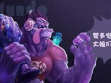
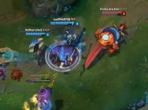
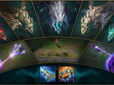
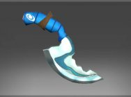
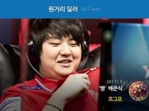
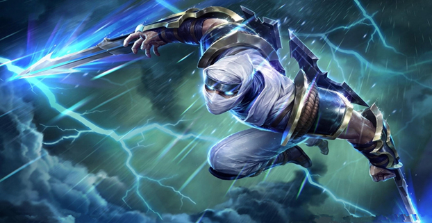

-
大连首支电竞女神战队 白富美颜值爆表身材魔鬼
现今，要说网络什么最火?异口同声地答案是：电竞圈火爆。火爆也衍生出许多以前从来不敢想象的职业：电竞美女、电竞主播、电竞陪玩等。大连这座兼具浪漫与现代的国际都市，电子竞技产业方兴未艾，电竞美女和电竞主播鲜为人知，今天让我们走近大连首支LOL女子战队NPG(Nuclear Power Girls )，颜值超高个个白富美!拳头终于放大招了：LOL排位队友掉线竟然将永不扣分！
话说LOL新版的检测系统裁决之镰上线也有一段时间了，就专治各种逃跑，挂机，等不讲理行为，按理说这是好事啊，可一样搞得好多小伙伴忍受不了这个系统惩罚!
LOL民间大神们创作的英雄皮肤：出了必买系列！
关于LOL里的皮肤，相信很多玩家首选看到的是原画，其次才是游戏里的各种3D模型，原画是LOL皮肤设计上很重要的一环，而拳头也时不时举办各种民间皮肤设计大赛，不过最近1年似乎没了动静。如果没记错的话，早在2014年底，腾讯还举办过一次，那一次也收到了大量玩家制作的皮肤，不知道这种皮肤大赛什么时候再次举办呢? -

LOL最适合新手玩的5大上单 最后这个连小学生都会玩！
LOL新手玩上单英雄选择是很重要的，因为上单的路线相对较长，所以非常容易被人滚起雪球。新手上单一定要操作简单无脑、而且发育起来可以无脑的冲对方后排。LOL塔姆Bug超远距离舌头吞救队友！敌人懵了
LOL中塔姆肯奇这个英雄自从他降临之后，就一直是非常不错的团队辅助定位。不管是上单的粘人性，还是辅助的救人方面，都拥有不错的表现。当然它也被称为是辅助中的大爷，因为一言不合就会吞人送头...而关于他身上的问题一直有不少。LOL年中法师技能更新预览：又成了一个新游戏
今天，从LOL测试服传来的消息，年中法师更新已经上线，其更新内容之多令人乍舌，当然除了法师更新外，还有许多内容的改动，比如新的皮肤、新的模型以及新装备的更新，而本篇文章将着重为大家介绍关于新版法师的内容，话不多说，我们开始吧。 -

LOL的“抄袭”越来越严重 难道你们一点感觉也没有？
最近，随着LOL美服测试服更新了5条不同属性的小龙后，很多人在感叹游戏越来越难理解之外，更多的人也表示这样游戏才有意思，难道真的是这样吗?LOL年中大改法师要逆天 单挑大龙仅需12秒
在近日更新的测试服中铁男带着2万7血的宠物，其他AP英雄数据一个比一个逆天，大量关于年中法师的更新内容也曝光了，此外还有新皮肤以及全新的4龙BUFF。LOL设计师爆料：瑞兹将再次重做！真是日了Dog了！
LOL在今年的改动有很多，其中最大的框架排位系统都被新模式取代，因此可谓是LOL发展史上的一次重大交替之年。而随着版本的补丁变化，很多英雄也在崛起，其中大家耳熟能详的就是影流之主劫了。虽然目前在联赛中劫的出场率并不是很高，但是AD装备的加强，新增幕刃，以及自身能力的平衡后。劫成为了S6最当红的杀手英雄。 -
大连首支电竞女神战队 白富美颜值爆表身材魔鬼
现今，要说网络什么最火?异口同声地答案是：电竞圈火爆。火爆也衍生出许多以前从来不敢想象的职业：电竞美女、电竞主播、电竞陪玩等。大连这座兼具浪漫与现代的国际都市，电子竞技产业方兴未艾，电竞美女和电竞主播鲜为人知，今天让我们走近大连首支LOL女子战队NPG(Nuclear Power Girls )，颜值超高个个白富美!LOL是座美容院！盘点选手们的惊天变化
在很多游戏迷的眼里，坐在电脑面前玩一天游戏应该是最美好的事情了。很少运动，部分人又爱喝碳酸饮料吃零食，所以很容易发福。比如SKT的ADC bang!也许你还记得他，以前的他是这样的讲道理分析一波：QG内部矛盾升级 UZI离开几率多大？
随着2016年LPL春季总决赛的结束，QG这支在常规赛被一路看到的队伍，却因为内部管理问题导致了后期直接爆炸，而这一戏剧性的结局伤害的不仅仅是广大QG粉丝，相信更多的人也为小狗感到不值。 -
拳头终于放大招了：LOL排位队友掉线竟然将永不扣分！
话说LOL新版的检测系统裁决之镰上线也有一段时间了，就专治各种逃跑，挂机，等不讲理行为，按理说这是好事啊，可一样搞得好多小伙伴忍受不了这个系统惩罚!LOL狮子狗雷恩加尔禁用公告：技能CD有Bug！
由于傲之追猎者雷恩加尔存在“使用R技能过程中被杀死后经过一些特定步骤会导致所有技能冷却时间为零”的严重缺陷，该缺陷将严重影响游戏平衡性，需要紧急禁用雷恩加尔。我们会在确保该问题被彻底修复

GameLoft英雄联盟专区
-

无形装逼，最为致命劫是LOL中第四位忍者英雄，也是以能量消耗为主的无蓝条英雄。他拥有很高的技能爆发，能够很轻松收割人头，他还能利用隐分身进行位移，骚扰，补刀等。
-
 再削也挡不住的艾瑞莉娅刀锋意志是一个刺客型副坦的英雄，最常打的路线是上路。俗称由于多次受到命运的阻挠，经受了巨大的挫折，被连续削弱11次，但仍是上单一霸。
再削也挡不住的艾瑞莉娅刀锋意志是一个刺客型副坦的英雄，最常打的路线是上路。俗称由于多次受到命运的阻挠，经受了巨大的挫折，被连续削弱11次，但仍是上单一霸。 -
 你最值得入手的英雄皮肤皮肤并不是必需品，但是在经济条件允许的确前提下，提升自己的游戏观赏性和实用性，也是一种不错的体验。
你最值得入手的英雄皮肤皮肤并不是必需品，但是在经济条件允许的确前提下，提升自己的游戏观赏性和实用性，也是一种不错的体验。
统治战场模式已经陪伴我们走过了四载春秋，现在到了和这个以快节奏遭遇战和夺旗-占领玩法为目标的模式说再见的时候了。那些身经百战、并用实际行动维护着这一模式的统治战场老兵们都将获得“战场统治者图标”作为表彰。